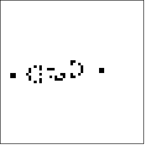

| Conway speculated there is a Life pattern he called a glider gun, a pattern that would generate a glider every few generations. Unimpeded, a glider gun could generate a collection of live cells that would grow forever at a constant rate. |
| William Gosper, Robert April, Michael Beeler, Richard Howell, Rich Schroeppel, and Michael Speciner, graduate students at MIT, found a glider gun pattern. |
|  |
| Click the picture to return. |
Return to Life.